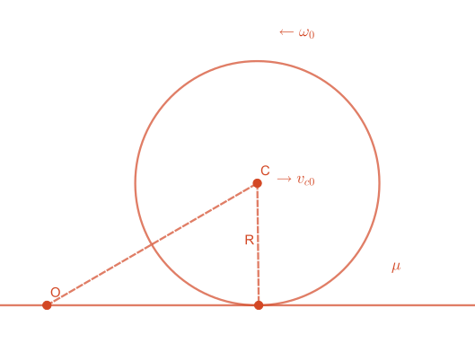

[大学物理] 纯滚动
发表于|更新于
|总字数:494|阅读时长:2分钟|浏览量:
例题
半径为R的球，绕质心轴的转动惯量J=32mR2（m为球的质量），在粗糙水平面上运动，开始时球质心速度为vc0，初角速度为ω0，方向如图所示（垂直纸面向外），摩擦系数μ，求球到开始纯滚动所需的时间及纯滚动时质心的速度

解：
在平面上取一点O作为角动量的参考点，因为摩擦力方向与水平面平行，过O点，因此摩擦力矩为0，重力矩球的合外力矩为0，关于O点角动量守恒
重要结论
球对参考点O的角动量等于对点O的质心角动量（公转的角动量）和绕质心轴的角动量（自传的角动量）的矢量和
因此开始时角动量为mRvc0−Jω0，（注意ω0和Rvc0的方向相反，所以要加负号，取垂直纸面向里为正方向）
纯滚动条件
表面线速度等于角速度叉乘半径 v=ω×R
表面线速度等于球质心速度 v=vc
因此：开始纯滚动时角动量为mRvc+Jω
mRvc0−Jω0vc−vc0=−mRJ(ω0+ω)vc=mRvc+Jω=−32R(ω0+ω)=Rω 角动量守恒 速度改变量 纯滚动条件
可解得
vc=53vc0−52Rω0
摩擦加速度μg
vct=vc0−μgt=52μgvc0+Rω0